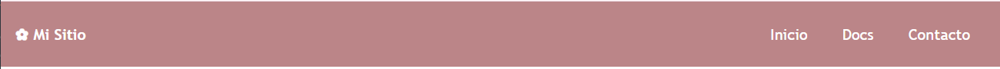
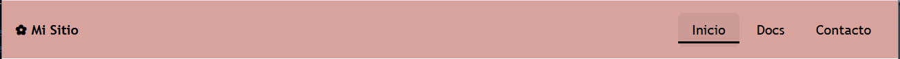
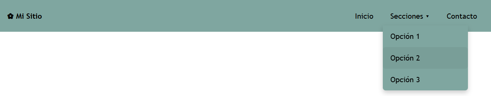

Navbar
Barra de navegación fija, responsiva y generada automáticamente en 4 estilos × 11 colores. Incluye toggle para móvil y soporte para submenús dropdown.
¿Cómo funciona?
La navbar se genera con un doble @each en
_navbar.scss: uno itera sobre los 4 estilos y otro
sobre los 11 colores de $theme-colors, produciendo 44
variantes sin repetir código.
La convención de nombre es .navbar-{estilo}--{color},
excepto el estilo base que usa .navbar--{color}. En
móvil el menú se oculta y el botón .nav-toggle lo
despliega añadiendo .is-active vía JavaScript.
position: fixed y
z-index: 3000. El wrapper de la página necesita la
clase .has-navbar para que el contenido no quede
tapado debajo de ella.
Estructura HTML
Todos los estilos de navbar comparten la misma estructura interna de elementos.
| Elemento | Clase / Atributo | Descripción |
|---|---|---|
<nav> |
.navbar--{color} |
Contenedor principal, fijo en el top de la pantalla |
<span> / <a> |
— | Brand o nombre del sitio |
<button> |
.nav-toggle |
Botón hamburguesa, visible solo en móvil |
<ul> |
.nav-menu |
Lista de enlaces. JS añade .is-active al
abrir en móvil
|
<li><a> |
.active (opcional) |
Enlace activo resaltado visualmente |
<nav class="navbar--dark">
<span class="fw-bold">Mi Sitio</span>
<button class="nav-toggle" aria-label="Menú">☰</button>
<ul class="nav-menu">
<li><a href="#">Inicio</a></li>
<li><a href="#" class="active">Docs</a></li>
<li><a href="#">Contacto</a></li>
</ul>
</nav>
<!-- Compensar el position: fixed de la navbar -->
<div class="main-wrapper has-navbar">
<main class="main-content">...</main>
</div>
Estilo base — .navbar--{color}
Fondo sólido del color elegido con hover de fondo semitransparente sobre los enlaces. Es el estilo más simple y versátil.

Ejemplos demostrativos de colores/p>
.navbar--primary
Inicio Docs Contacto
.navbar--secondary
Inicio Docs Contacto
.navbar--dark
Inicio Docs Contacto
.navbar--success
Inicio Docs Contacto
.navbar--info
Inicio Docs Contacto
.navbar--warning
Inicio Docs Contacto
.navbar--danger
Inicio Docs Contacto
.navbar--accent
Inicio Docs Contacto
.navbar--muted
Inicio Docs Contacto
.navbar--alert
Inicio Docs Contacto
.navbar--light
Inicio Docs Contacto
<nav class="navbar--primary">...</nav>
<nav class="navbar--secondary">...</nav>
<nav class="navbar--dark">...</nav>
<!-- disponible para los 11 colores del tema -->
Underline — .navbar-underline--{color}
Los enlaces no tienen fondo en hover. En su lugar aparece una
línea inferior animada con ::after que crece de 0% al
100% del ancho del enlace al hacer hover.

Ejemplos demostrativos de colores
.navbar-underline--primary
Inicio Docs Contacto
_ _ _ línea inferior animada
.navbar-underline--secondary
Inicio Docs Contacto
_ _ _ línea inferior animada
.navbar-underline--dark
Inicio Docs Contacto
_ _ _ línea inferior animada
<nav class="navbar-underline--primary">
<span class="fw-bold">Mi Sitio</span>
<button class="nav-toggle" aria-label="Menú">☰</button>
<ul class="nav-menu">
<li><a href="#">Inicio</a></li>
<li><a href="#" class="active">Docs</a></li>
</ul>
</nav>@mixin nav-underline {
.nav-menu li a {
position: relative;
&::after {
content: "";
position: absolute;
bottom: 4px;
left: 0;
width: 0%;
height: 2px;
background: currentColor;
@include transicion;
}
&:hover::after {
width: 100%; // la línea crece al hacer hover
}
}
}
Dropdown — .navbar-dropdown--{color}
Añade soporte para submenús. Al hacer hover sobre un
<li> que contiene una lista
.submenu, el submenú aparece posicionado debajo del
enlace padre con el mismo color de fondo de la navbar.

Ejemplos demostrativos de colores
.navbar-dropdown--primary
Inicio Docs ▾ Contacto
↳ Introducción
↳ Grid
↳ Componentes
.navbar-dropdown--dark
Inicio Docs ▾ Contacto
↳ Introducción
↳ Grid
↳ Componentes
<nav class="navbar-dropdown--dark">
<span class="fw-bold">Mi Sitio</span>
<button class="nav-toggle" aria-label="Menú">☰</button>
<ul class="nav-menu">
<li><a href="#">Inicio</a></li>
<li>
<a href="#">Secciones ▾</a>
<ul class="submenu">
<li><a href="#">Opción 1</a></li>
<li><a href="#">Opción 2</a></li>
<li><a href="#">Opción 3</a></li>
</ul>
</li>
<li><a href="#">Contacto</a></li>
</ul>
</nav>@mixin nav-dropdown($color: $primary) {
.nav-menu li {
position: relative;
&:hover > .submenu {
display: flex; // aparece al hacer hover
}
}
.submenu {
display: none;
position: absolute;
top: 100%;
left: 0;
background: $color; // hereda el color de la navbar
min-width: 180px;
flex-direction: column;
border-radius: 0 0 6px 6px;
z-index: 9999;
}
}.submenu no es accesible.
Considera lógica JS adicional si necesitas dropdown en móvil.
Resumen de variantes
Los 4 estilos disponibles y su comportamiento.
| Estilo | Patrón de clase | Efecto hover | Característica especial |
|---|---|---|---|
| base | .navbar--{color} |
Fondo semitransparente | — |
| underline | .navbar-underline--{color} |
Línea inferior animada | Pseudo-elemento ::after |
| buttons | .navbar-buttons--{color} |
Fondo píldora intensificado | border-radius: 20px |
| dropdown | .navbar-dropdown--{color} |
Fondo semitransparente | Submenú .submenu en hover |
| Color | base | underline | buttons | dropdown |
|---|---|---|---|---|
| primary | .navbar--primary |
.navbar-underline--primary |
.navbar-buttons--primary |
.navbar-dropdown--primary |
| secondary | .navbar--secondary |
.navbar-underline--secondary |
.navbar-buttons--secondary |
.navbar-dropdown--secondary |
| success | .navbar--success |
.navbar-underline--success |
.navbar-buttons--success |
.navbar-dropdown--success |
| info | .navbar--info |
.navbar-underline--info |
.navbar-buttons--info |
.navbar-dropdown--info |
| warning | .navbar--warning |
.navbar-underline--warning |
.navbar-buttons--warning |
.navbar-dropdown--warning |
| danger | .navbar--danger |
.navbar-underline--danger |
.navbar-buttons--danger |
.navbar-dropdown--danger |
| alert | .navbar--alert |
.navbar-underline--alert |
.navbar-buttons--alert |
.navbar-dropdown--alert |
| light | .navbar--light |
.navbar-underline--light |
.navbar-buttons--light |
.navbar-dropdown--light |
| dark | .navbar--dark |
.navbar-underline--dark |
.navbar-buttons--dark |
.navbar-dropdown--dark |
| accent | .navbar--accent |
.navbar-underline--accent |
.navbar-buttons--accent |
.navbar-dropdown--accent |
| muted | .navbar--muted |
.navbar-underline--muted |
.navbar-buttons--muted |
.navbar-dropdown--muted |